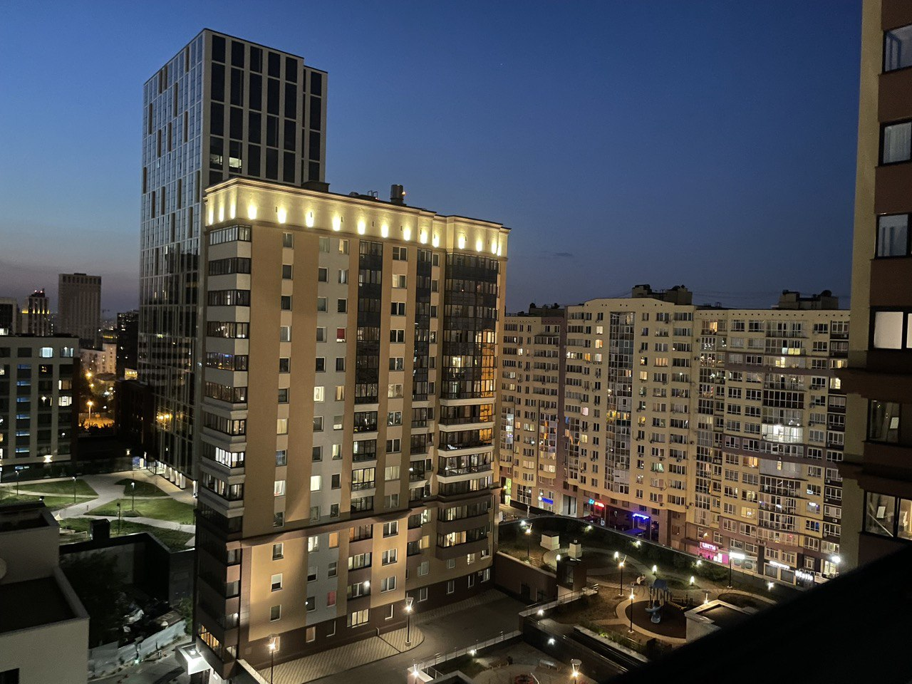
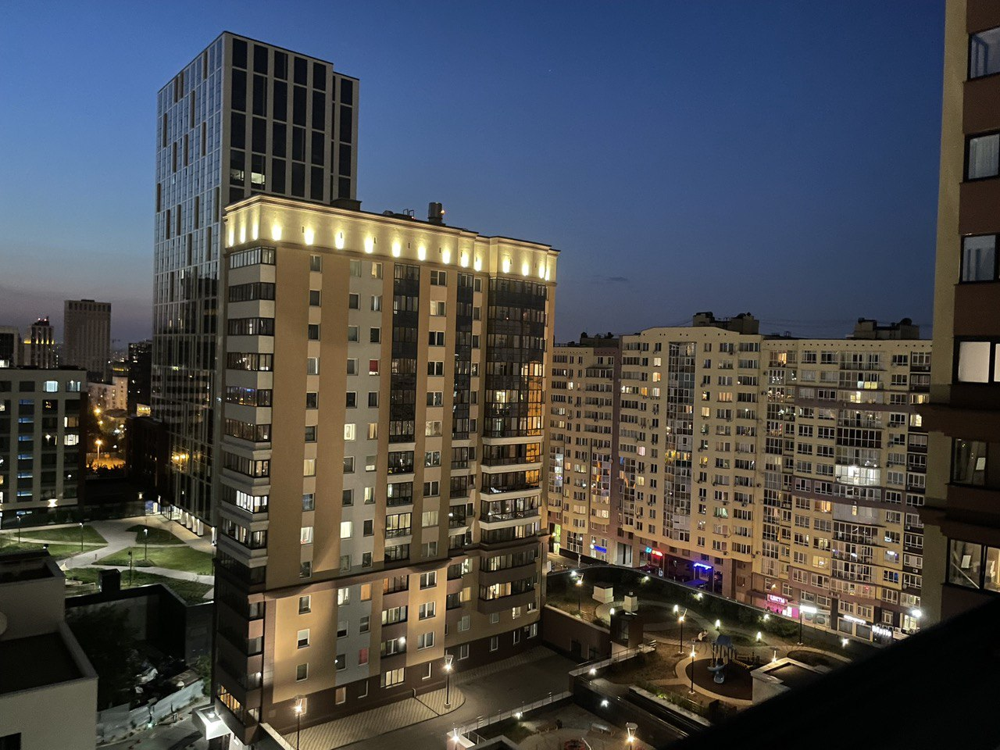
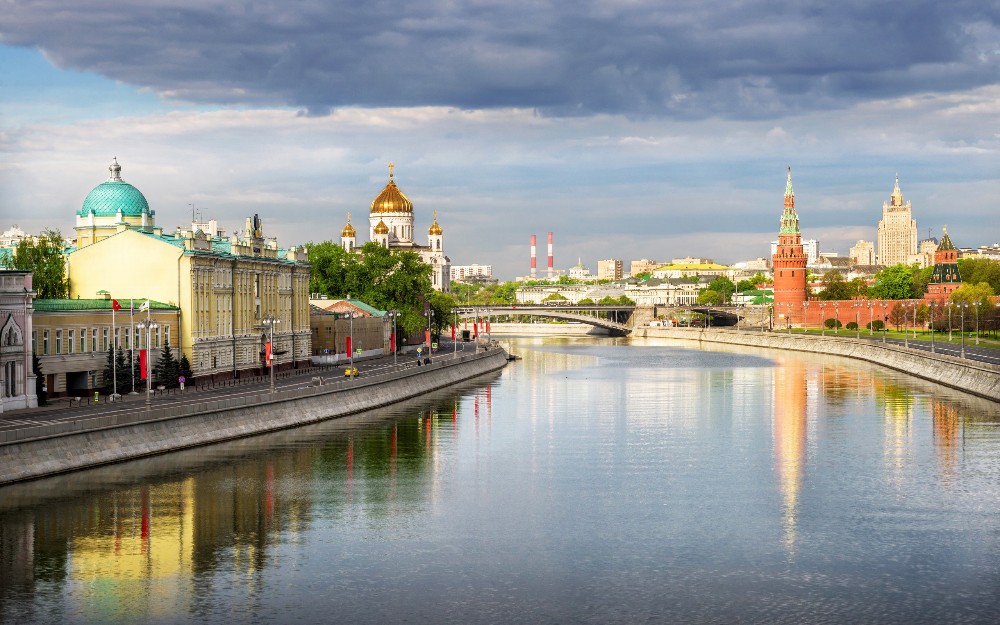
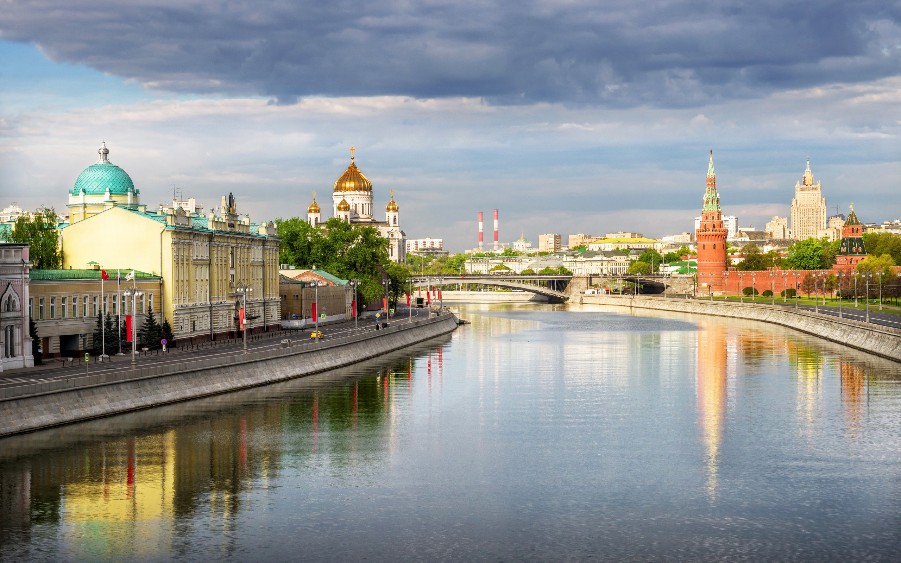
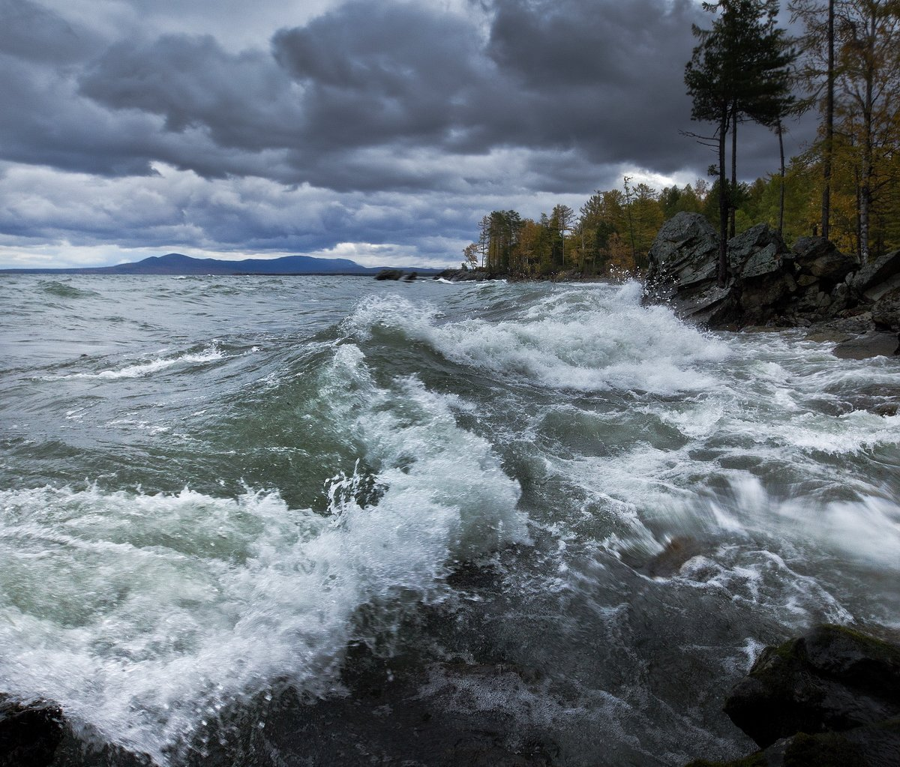
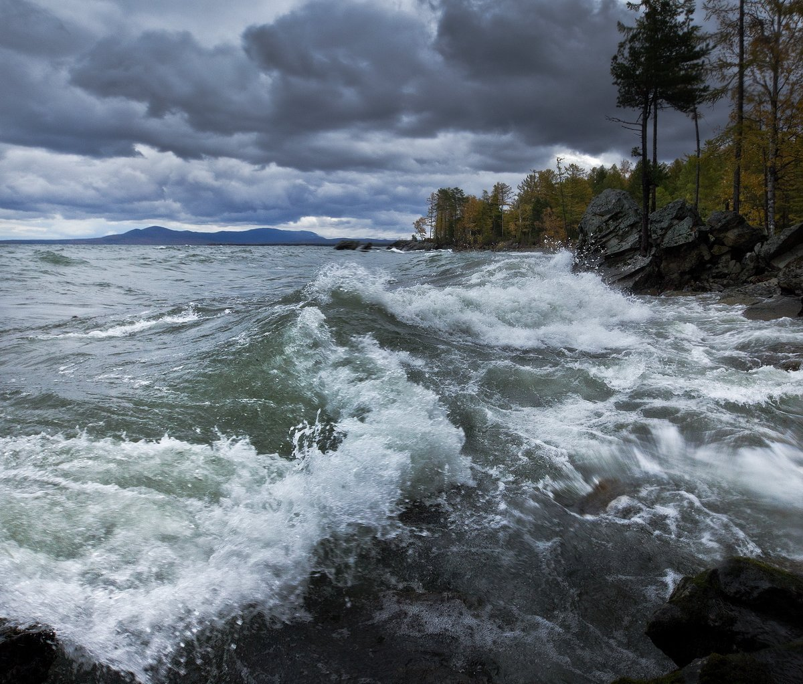

город Санкт-Петербург - город разводных мостов, дворцов и музеев.
Санкт-Петербург - это культурная столица России, которая привлекает туристов со всего мира своими историческими достопримечательностями, музеями, театрами и парками. Вот несколько причин, по которым вам стоит посетить этот город:
 


 

 
